圖表 Charts
- 《天下雜誌》透過圖表設計，有利於讀者快速抓取重點。原則上以一張圖表說明一個主題，應避免資訊過量造成負擔。
- 圖表顏色應優先使用《天下雜誌》品牌色為基調 ， 維持品牌形象的一致性。
- 若因圖表內容需要使用兩種以上主色，必須注意配色和諧，視覺上不衝突。可將顏色的文化意涵和色彩心理學納入考量。
完整的圖表資訊
- 使用主標來闡釋圖表主題、副標說明圖表內容。必須提供圖例以利對照。
- 必須標示正確的資料來源。
- 網頁最小字級不可小於 12px。
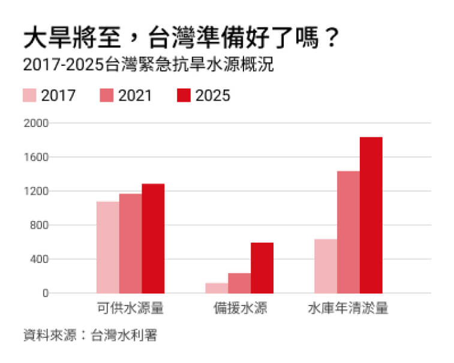
表格長寬比建議為 5:4。內容與四周邊界之間，須維持恰當留白距離（100px），勿貼邊或有過多留白，距離至少為圖表寬度的 5%
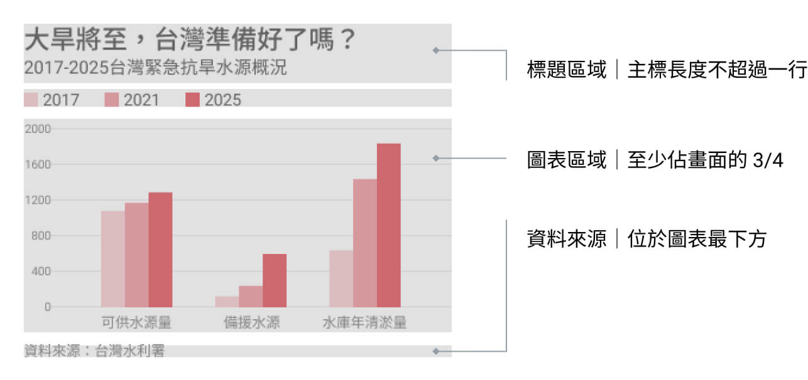圖表顏色使用
-
以第一主色（天下紅）及其色階變化為主，副色（灰）為輔
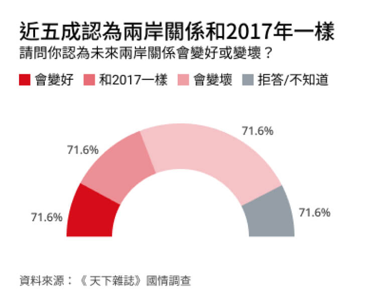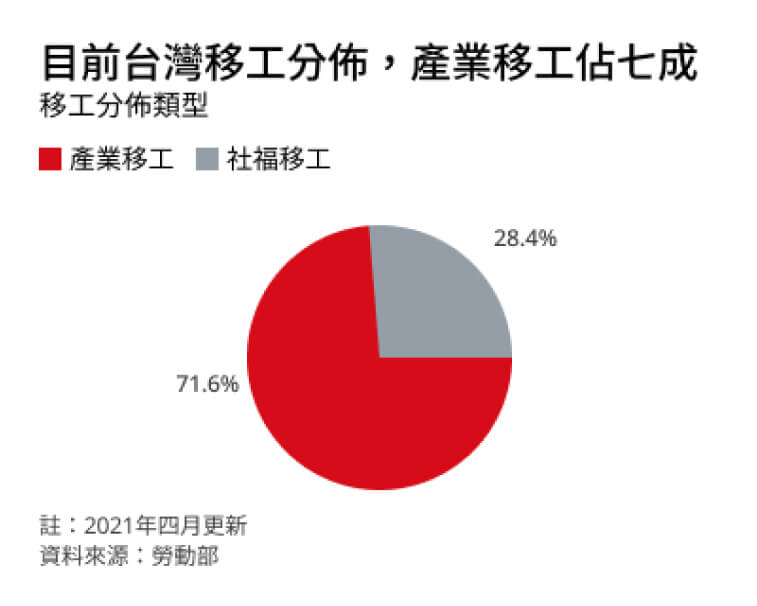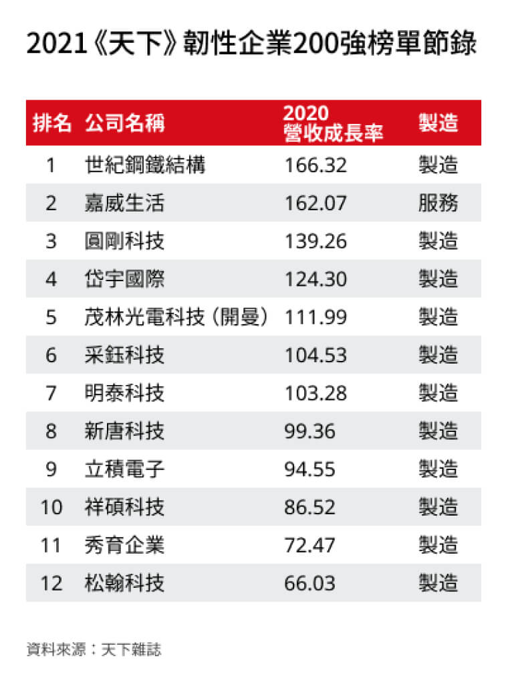
-
如果需要使用兩種以上主色，需注意配色協調
- 不同屬性/類型的項目，根據建議色彩，依序使用各主色。
- 相近屬性/同類型的項目，根據建議色彩，依序使用各主色及其不同色階，或搭副色灰階。
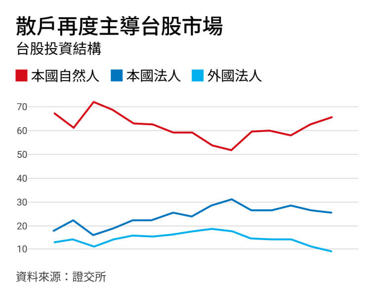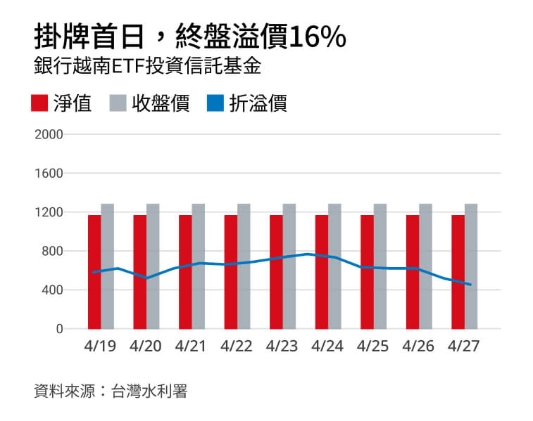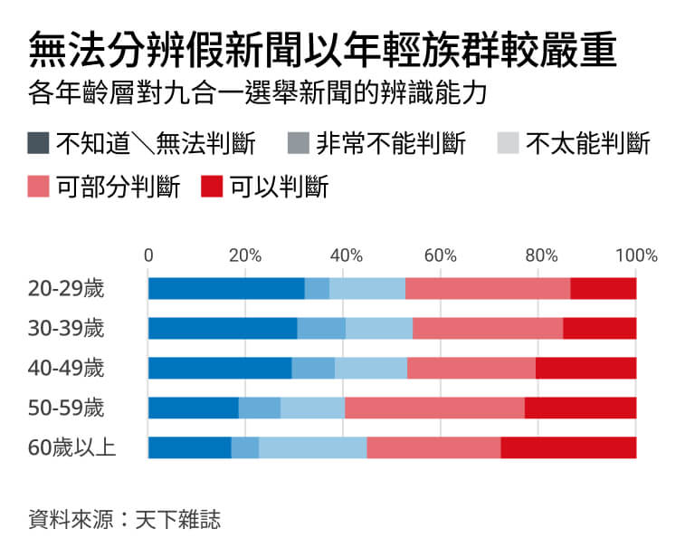第一主色
副色
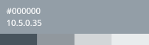其他主色
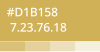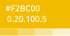 -
圖表主色使用順序建議第一主色（紅）、第二之後（根據紙本配色即可）
副色（灰階）